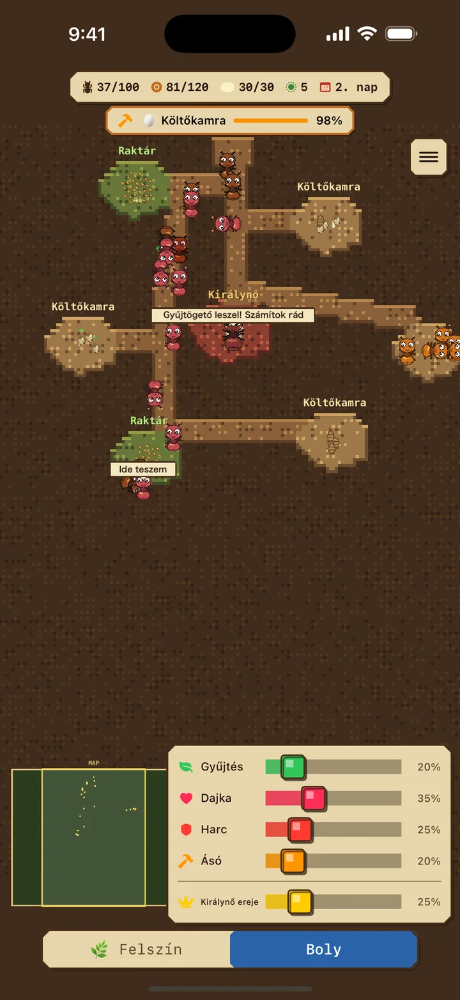
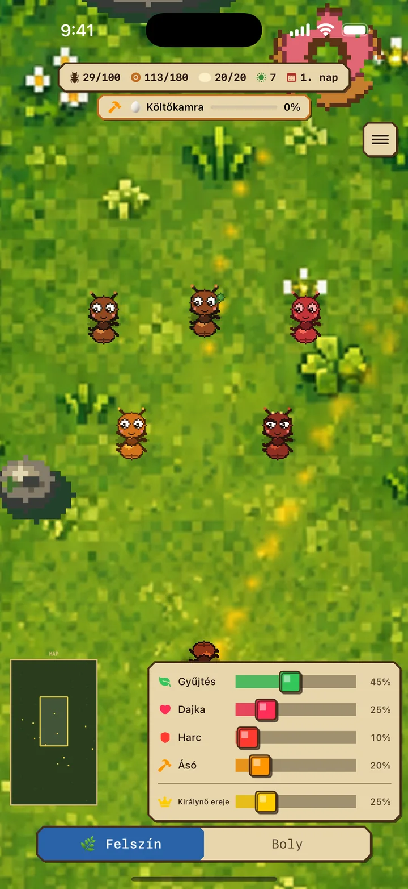
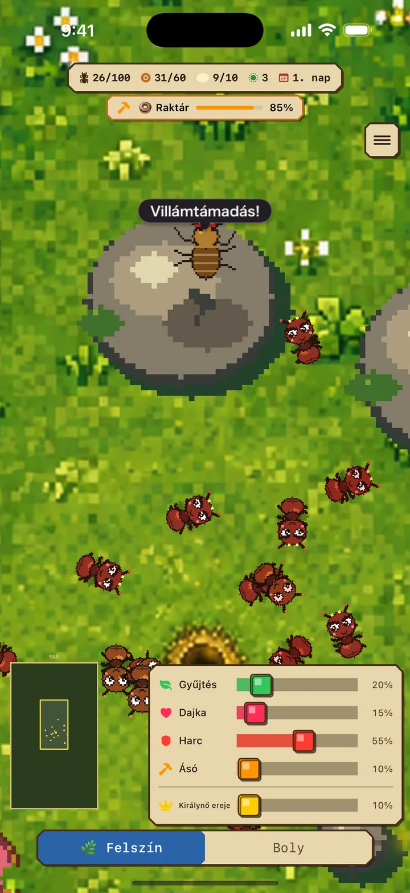
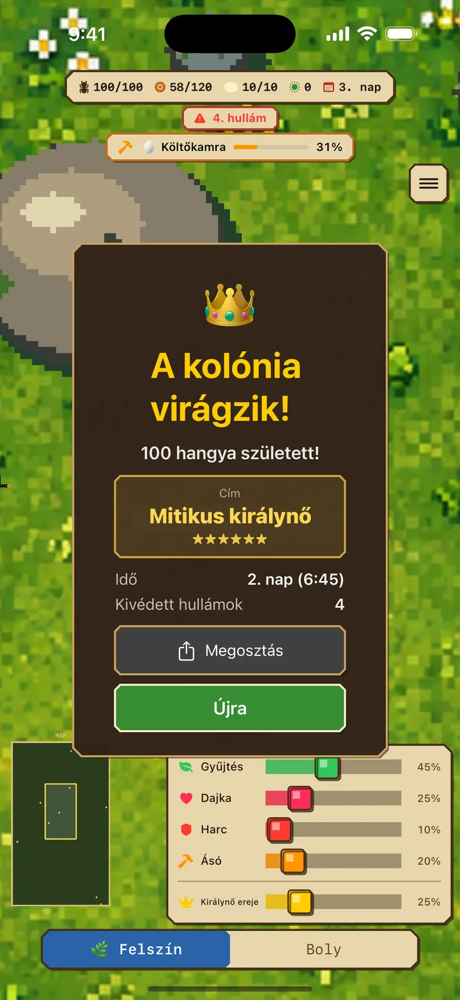

Gyűjtögetők (zöld)
a felszínen keresnek élelmet, és a bolyba hordják
Hangyanapló iOS
Hangyakolónia-szimulátor és valós idejű stratégiai játék
A „Hangyanapló” valós idejű stratégiai játék, amelyben hangyakolóniát nevelsz. Oszd be a dolgozók szerepeit a királynő körül, vészeld át az ellenséges rohamokat, és építs virágzó, 100 fős kolóniát.
Ingyenes · Hirdetéseket tartalmaz / iPhone-ra / iOS 17.0+


01 Fedezz fel 2 világot
Ha dolgozókat rendelsz az ásáshoz, a boly természetesen terjeszkedik a meglévő járatokból, és szükség szerint élelemraktárak vagy ivadékkamrák alakulnak ki.
Felszín: veszélyes világ, ahol élelmet gyűjtesz és harcolsz
Boly: biztonságos menedék a lárváknak és az új kamráknak
A kamrák növelik az élelem- és ivadékkapacitást. Ha az élelemraktár megtelik, a gyűjtők várnak, majd automatikusan folytatják, amint felszabadul egy hely.
02 4 szerep a stratégiádhoz
A túlélés kulcsa, hogy a szerepek arányát a helyzethez igazítsd.
a felszínen keresnek élelmet, és a bolyba hordják
etetik a lárvákat, hogy új dolgozók legyenek
megküzdenek az ellenséggel, és védik a kolóniát
Ásással bővíti a bolyt — A kész kamrák növelik az élelem- és ivadékkapacitást
Növeld a Királynő Erejét, hogy akár 3× gyorsabban petézzen. Cserébe akár 8× gyorsabban éhezik meg, a gondozóknak pedig etetniük kell, petéket hordani és lárvákat ápolni. Igazítsd az erőt a bolyhoz.

03 Verd vissza az ellenséges hullámokat
Az idő múlásával a támadások hevesebbek lesznek. Növeld időben a katonák számát.
A túlélés kulcsa, hogy a szerepek arányát a helyzethez igazítsd.
Letöltés az App Store-ból04 Versenyfutás az idővel
A 100 hangyáig mért időd dönti el, a 6 cím közül melyiket kapod. Menj 15 perc alá, és Mitikus királynő leszel. Az eredményt olyan kártyán oszthatod meg, amelynek grafikája a címmel változik.
A 100 hangyáig eltelt idő a pontszámod. Hajtsd a legjobb rekordot, és próbáld újra meg újra!


Hangyanapló
Védd a királynőt, és növeld a kolóniát 100 hangyára!
Letöltés az App Store-bólIngyenes · Hirdetéseket tartalmaz / iPhone-ra / iOS 17.0+